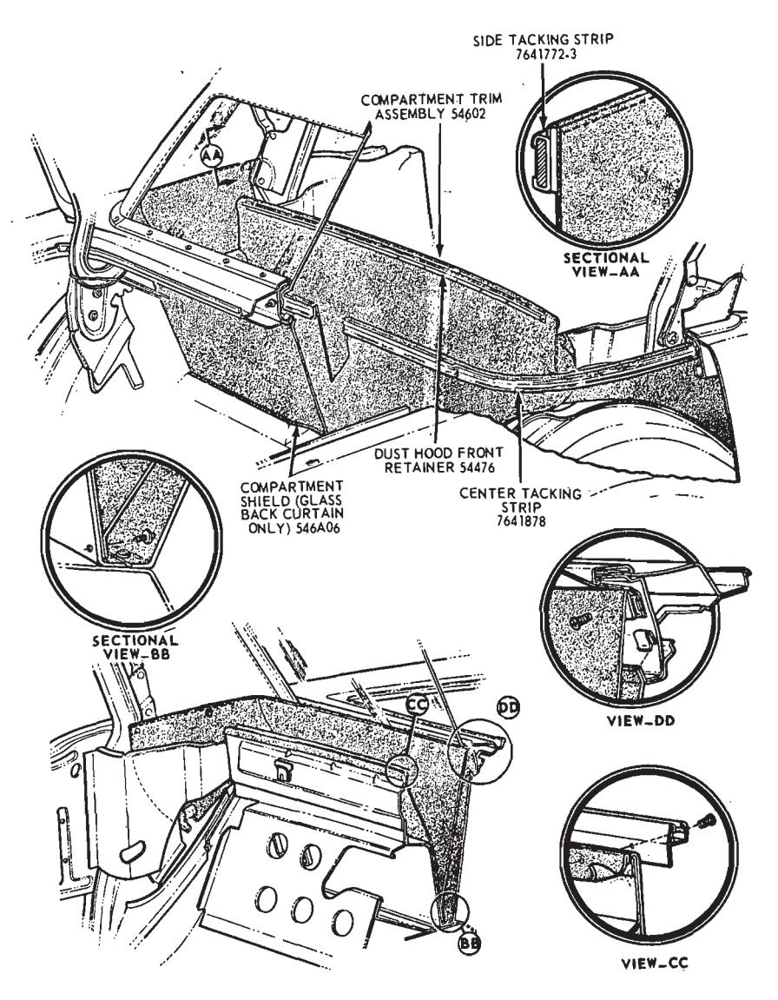
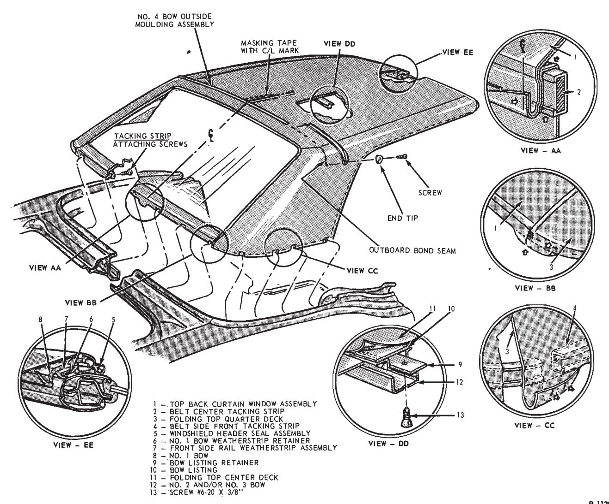
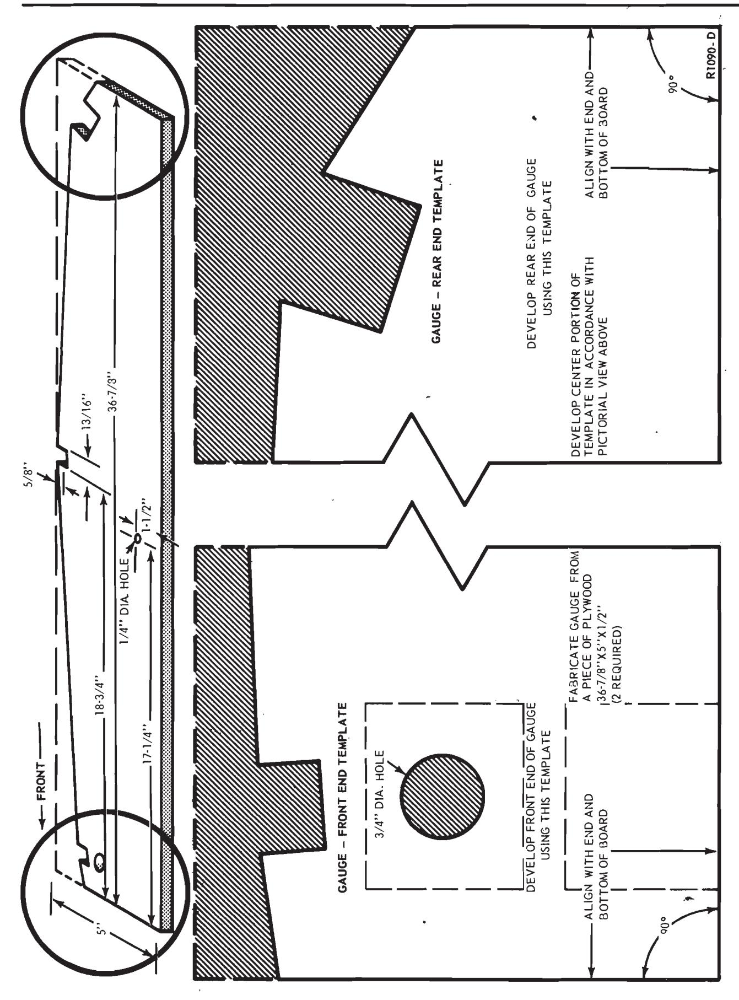
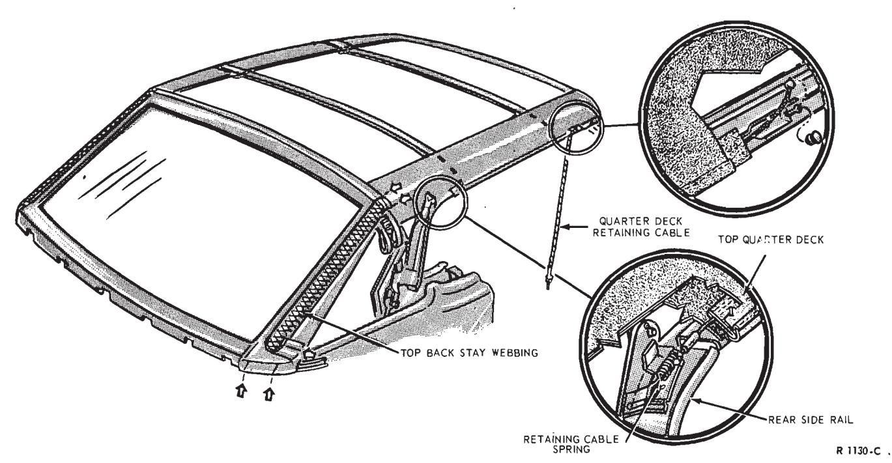
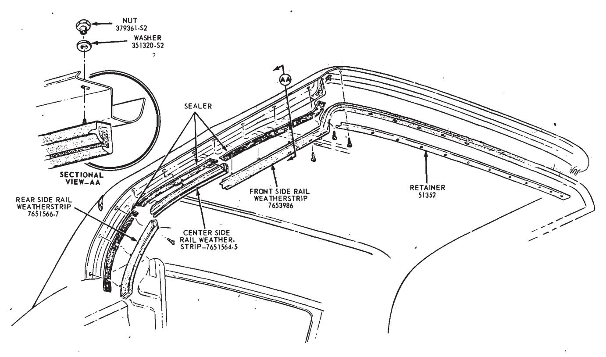

Convertible Tops · 45-02-07a
-
Unhook the top from the windshield header and prop the top up to relieve tension. 2. Unzip the back curtain.
-
Remove 3 screws retaining each side of the top compartment trim at the quarter panel.
-
Remove 5 screws attaching the top compartment trim to the rear seat and remove the compartment trim tension springs (Fig. 14).
-
To assure the proper location of the back curtain assembly during installation, the following location marks should be made with tailor’s crayon or equivalent:
Locate the center punch mark on the belt center tacking strip retainer (Fig. 15, View A-A). Transpose this center mark to the adjacent rear curtain and compartment trim materials.
Mark the rear curtain along the lower edge of the belt center tacking strip (Fig. 15, View BB and CC).
Mark the belt center tacking strip to indicate the rear window opening at both sides (Fig. 15, View BB).
-
Pull the top compartment trim back and remove 8 bolts retaining the back curtain and the center tacking strip.
-
Remove the staples from the webbing and the top quarter from the tacking strip. Remove the back window, top compartment trim, and the tacking strip, as an assembly, from the vehicle.
-
Remove the back curtain from the tacking strip and position the new back curtain to the tacking strip. Cut out the bolt hole locations on the back curtain.
-
Position the back curtain assembly into the vehicle and tack the webbing and quarter assembly to the tacking strip. Then, zip the back curtain shut.
-
Remove the prop from the top and secure the top to the windshield header.

Fig. 14 — Back Curtain Installation — Mustang, Cougar\ -
Install and tighten the tacking strip attaching bolts.
-
Install the top compartment trim quarter and seat back retaining screws. Clean the top in the rear roof bow area with a suitable cleaner.
Back Curtain Zipper
-
Unhook the top from the windshield header and prop the top up to relieve tension. 2. Unzip the back curtain.
-
Remove the rear roof bow retainer tips and pull the outside moulding from the rear bow. 4. Remove the staples retaining the - top deck and quarter assembly to the rear roof bow tacking strip and remove the retainer.
-
Mark the location of the right and left case assembly, and the roof bow, then, remove the staples retaining the right and left case assembly to the rear roof bow.
-
Mark the location of the zipper center at the rear roof bow with tailor’s crayon. Then, pull the upper half of the back curtain zipper from the rear roof bow tacking strip.
-
Remove 3 screws retaining the top compartment trim to the belt front side tacking strip on each side. Remove 5 screws retaining the com- partment trim to the seat back (Fig. 14). Remove the top compartment trim tension springs.

Fig. 15 — Top Trim Assembly Attachments — Mustang, Cougar\ -
Pull the top compartment trim back and remove 8 bolts retaining the center tacking strip. Mark the zipper end locations on the top material with tailor’s crayon.
-
Remove the staples from the webbing and the top quarter from the tacking strip. Remove the back curtain, well liner, and tacking strip as an assembly from the vehicle.
-
Mark the location of the zipper on the back curtain, then, remove the zipper from the back curtain and sew on a new zipper.
-
Locate the center and position the upper half of the back curtain zipper to the center of the rear roof bow tacking strip and staple or tack it se- curely to the tacking strip.
-
Position the right and left case assemblies to the rear roof bow tacking strip and staple or tack them securely to the tacking strip.
-
Position the top deck and quarter assembly to the rear roof bow tacking strip and staple or tack it securely to the tacking strip, working from the center outward.
-
Staple or tack the rear roof bow retainer securely to the rear roof bow, then, insert the moulding in the retainer.
-
Install the right and left rear roof bow retainer tips (Fig. 15).
-
Position the back curtain in the vehicle and tack the webbing and quarter assembly to the tacking strip.
-
Zip the curtain shut and remove the prop from the top, then, lock the top to the windshield header.
-
Install the center tacking strip bolts and tighten them until all wrinkles are removed from the back curtain and quarters. Then, install the top compartment trim retaining screws.
Convertible Top Fabric
Removal
-
Protect the painted surfaces of the upper back panel, luggage compartment door and both quarter panels with suitable covers.
-
Fabricate two bow locating gauges to the dimensions shown in Fig. 16.
-
Remove the rear seat cushion and seat back.

Fig. 16 — Bow Locating Gauge Fabrication — Mustang, Cougar\
Fig. 17 — Top Stay Pad Webbing and Quarter Deck Retainer Cable Attachments — Mustang, Cougar\ -
Remove the top compartment trim side and front attaching screws (Fig. 14).
-
Lower the top and remove the weatherstrip retainer from the No. I bow.
-
Remove the front side weatherstrip attaching nuts from both front side rails and remove the weather-strip assembly (Fig. 15).
-
Remove the windshield header seal assembly and the top material from the No. 1 bow (Fig. 15).
-
Remove the center and rear side rail weatherstrips. Loosen the top quarter material flaps which are cemented to the front and rear side rails (each side).
-
Disengage the top material hold-down cables from the rear side rail attachment and pull the cables forward until each is removed from the retaining sleeve (Fig. 17).
-
Remove each side rail coat hook.
-
Raise the top and clamp the No. I bow to the header.
-
Install the two fabricated bow
-
locating gauges (Fig. 16).
- Remove the No. 2 and No. 3 bow listing retainer screws and remove both retainers from the listings (Fig. 15).
-
-
Raise the compartment trim up sufficiently to remove all of the tacking strip attaching screws (Fig. 15).
-
Remove the No. 4 bow outside moulding end tips, moulding and moulding retainer (Fig. 15).
-
Detach the top material from the No. 4 bow. Peel the top material back to expose the No. 4 bow and mark the existing top back stay webbing location at the No. 4 bow and the tacking strip (Fig. 17).
-
Detach the upper end of the webbing from the No. 4 bow. Unzip the rear curtain window and remove the soft trim with tacking strips attached. Place the assembly on a bench.
-
Mark the No. 4 bow at both ends of the zipper elastic material and detach the upper half of the zipper assembly from the No. 4 bow.
-
To assure the proper location of the tacking strips in the new top assembly, back curtain window assembly and/or compartment trim assembly, proceed as follows:
- a. Locate the center punch mark on the belt center tacking strip retainer (Fig. 15, View A-A). Transpose this center mark to the adjacent rear curtain and compartment trim materials.
- b. Mark the rear curtain along the lower edge of the belt center tacking strip (Fig. 15, View BB and CC).
- c. Mark the belt center tacking strip to indicate the rear window opening at both sides (Fig. 15, View BB).
- d. Mark the top deck quarters along the lower edge and at the ends of each belt side front tacking strip (Fig. 15, View CC).
- Carefully and without tearing - the material, detach the trim material being replaced from the tacking strips.
-
Trim off the selvage edge of the old top deck quarter and/or back curtain material that extends below the tacking strips. The selvage edge must only be cut from the old parts which are being replaced.
-
Lay the new rear curtain window assembly on a clean bench with the interior surface up. Measure the width and mark the center of the back window at the top, above the zipper, and at the bottom, at the tacking strip area (Fig. 15).
-
Using the old rear curtain window assembly as a template, mark the new curtain to indicate the lower edge of the tacking strip. Also mark the tacking strip attaching hole locations. Carefully remove the old rear curtain window assembly and cut out the tacking strip attaching holes in the new curtain, only.
-
Using the old top assembly as a template, mark the new top quarter deck to indicate the lower edge of the tacking strip. Also mark the tacking strip attaching hole locations. Discard the old top. Cut out the tacking strip holes in each quarter of the new top, only. Do not trim off the selvage edge.
-
Using the old compartment trim as a template, transpose the markings to the new compartment.

Fig. 18 — Side Rail Weatherstrip — Mustang, Cougar\ -
Align the belt center tacking strip with the compartment trim alignment marks and retain with staples. The edge of the material should be flush with the bottom of the tacking strip.
-
Align the belt center tacking strip with the rear curtain window aligning marks and retain it with staples.
-
Align the belt side front tacking strip with the aligning marks on the top deck quarter (both sides) and retain it with staples.
-
Position each top back stay webbing on the belt center tacking strip and retain it with staples (Fig. 17).
-
Align the top deck quarter to the belt center tacking strip, maintain proper rear curtain opening and retain it with staples (Fig. 15, View BB).
-
Carefully position the upper half of the zipper assembly on the No. 4 bow aligning the bow and material center marks. The edge of the material should be flush with the front edge of the No. 4 bow tacking strip. Working from the center outboard, secure the assembly with staples. Both ends of the elastic strip should correspond with the marks on the No. 4 bow. Refer to Step 19 under Removal.
-
Position the rear curtain and top assembly on the stack and engage the zipper.
-
Position the top back stay webbing on the No. 4 bow aligning marks and secure it with staples (Fig. 17).
-
Install a piece of masking tape on the underside of the No. 4 bow at the centerline punch mark located in the bow. Mark the tape indicating the centerline
-
Measure and mark the center between the bond seams of the top center deck at the No. 4 bow on the underside of the material. Install a 6-inch piece of masking tape on the top material inner surface at the centerline of the No. 4 bow. Mark the centerline along the entire length of tape (Refer to Fig. 15).
-
With the bow locating gage in place (refer to Step 13 under Removal and Fig. 16), install the belt center tacking strip attaching screws to approximately 1/4 to 1/2-inch from the bottoming out position. Install the belt side front tacking strip attaching screws and tighten to within 1/4 to 1/2-inch of bottoming.
-
Center the top material on the No. 4 bow and pull it forward sufficiently to center the outboard bond seam on the No. 4 bow (Fig. 15). Secure the top material to the No. 4 bow with staples.
-
Install the two retainers in the No. 2 and No. 3 bow listings (Fig. 15).
-
Route the quarter deck retaining cables through the hold down sleeves in the top material and retain each cable at the rear (loosely) with the attaching nut and washer (Fig. 17).
-
Pull the top trim material forward over the No. 1 bow until the No. 2 and No. 3 bow listings (Fig. 15) are centered over their respective bows. While maintaining tension on the top trim, place a pencil mark on the outer surface of the trim material along the forward edge of the No. 1 bow.
-
Remove the two bow aligning gauges and reinstall the coat hooks.
-
Fold the front edge of the top material back from the No. 1 bow. Disengage the No. 1 bow from the windshield header and prop it up about one foot above the header.
-
Apply an ample amount of trim cement C2AZ-19C525-A across the lower front surface of the No. 1 bow including the tacking strip and to the adjacent inner surface of the top material.
-
Lower the No. 1 bow onto the header but do not clamp it. With the top material properly centered on the No. 1 bow, start at the outer front corners and alternately pull the material forward to the pencil aligning mark. Make certain that all wrinkles are removed, and then fold and cement the material to the underside of the bow.
-
Position the windshield header seal assembly (Fig. 15) and secure the seal and top material with staples. Trim off excess top material.
-
Cement the front and rear flaps to each side rail. Pierce holes in the flaps for the weatherstrip attachments
-
Install the front side rail weatherstrip and the No. 1 bow retainer.
-
Tighten the retainer cable adjustment nut at each rear side rail sufficiently to hold the top material tightly against the rail.
-
Install the intermediate and rear side rail weatherstrips. Adjust as required.
-
With the No. 1 bow clamped to the header, tighten all belt tacking strip attaching screws securely.
-
Install the compartment trim to the belt side front tacking strip with the attaching screws (Fig. 14).
-
Install the compartment trim with the seat back support lower ledge attaching screws (Fig. 14).
-
Install the rear seat back and cushion.
-
Remove the interior centerline tape strips.
-
Install the No. 4 bow outside moulding retainer, insert the moulding and install the two end tips (Fig. 15)
Roof Front Header Weatherstrip
- Release the toggle clamps and partially lower the top.
- Remove 12 screws attaching the weatherstrip retainer to the header and remove the retainer.
- Remove 2 screws attaching the weatherstrip to the header at each corner (Fig. 18).
- Remove 6 nuts and washers (3 each side) retaining the weatherstrip to the roof side rails and remove the weatherstrip.
- Apply sealer to the header and roof side rails and place the new weatherstrip in position.
- Install the weatherstrip retainer with 12 screws and the 2 weatherstrip attaching screws at each corner.
- Install 3 nuts and washers attaching the weatherstrip to each side rail. Trim the weatherstrip for a watertight fit (Fig. 18).
- Raise the top and lock it to the windshield header.